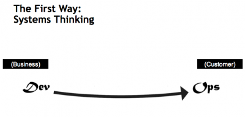
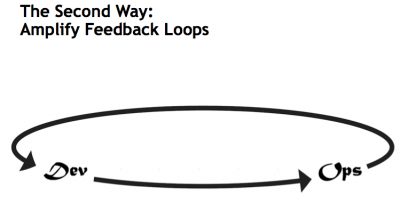
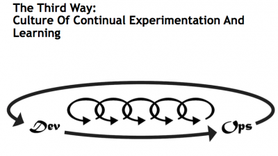

Traducción de Las Tres Vías: Los principios que sustentan el DevOps por Gene Kim
A raíz de la lectura de The Phoenix Project (del cual hicimos una reseña) buscamos más información sobre Las Tres Vías (The Three Ways) y fuimos a dar con un post de Gene Kim (co-autor del libro) donde hace una breve introducción a estas.
A continuación adjuntamos una traducción del post (podéis encontrar el post original aquí).
En este post, voy a hablar acerca de las “Tres Vías (Three Ways)”, que son los principios de los cuales derivan todos los patrones DevOps, que hemos usado en “DevOps Cookbook” y “The Phoenix Project: A Novel About IT, DevOps, and Helping Your Business Win.” Afirmamos que las “Tres Vías” describen valores y filosofías que enmarcar los procesos, procedimientos y prácticas del DevOps, así como los pasos prescriptivos.
Ha sido especialmente divertido trabajar en ellos con el también coautor Mike Orzon, recientemente ganador del preciado premio Shingo por su contribución a la excelencia operativa por su libro “Lean IT”.
Las Tres Vías son las siguientes. En futuros posts, describiré los patrones DevOps que pueden derivar de ellas.
La Primera Vía enfatiza el rendimiento del sistema entero, en contra del rendimiento de un silo específico o un departamento concreto – este puede ser un departamento grande (p.e. Desarrollo u Operaciones IT) o uno pequeño como una sola persona (p.e. un desarrollador, administrador de sistemas).
La atención se centra en todos aquellos elementos de valor de negocio que están funcionando gracias a la IT. En otras palabras, empieza identificando los requisitos (p.e. por negocio o por IT), implementándose en Desarrollo, y traspasándose hacia el equipo de Operaciones IT, donde se entregan al cliente en forma de servicio.
Los beneficios de poner la Primera Vía en práctica incluyen que un defecto conocido nunca será propagado hacia otros centros, nunca se permite crear una optimización local que provoque una degradación global, siempre se busca aumentar el flujo, y siempre se busca adquirir un conocimiento profundo del sistema.
La Segunda Vía trata sobre la creación de los ciclos de retroalimentación (feedback) de derecha a izquierda. El objetivo de casi cualquier iniciativa de mejora de proceso es reducir y ampliar los circuitos de feedback para que las correcciones necesarias se puedan hacer continuamente. Los beneficios de la Segunda Vía incluyen comprender y dar respuesta a todos los clientes, internos y externos, acortando y amplificando todos los ciclos de feedback, e integrando todos los conocimientos donde los necesitemos.
La Tercera Vía trata sobre crear una cultura que fomente dos cosas: experimentación continua, correr riesgos y aprender del fracaso; y entender que la repetición y la práctica son un prerrequisito para llegar a dominar algo completamente.
Necesitamos ambas cosas por igual. La experimentación y correr riesgos son lo que garantiza que podamos seguir empujando para mejorar, incluso si esto significa ir a la parte más profunda de la zona de peligro a la que nunca hayamos llegado. Y necesitamos el dominio de las habilidades que pueden ayudarnos a salir sin peligro de dicha zona cuando hayamos ido demasiado lejos.
Los beneficios de la Tercera Vía incluyen encontrar tiempo cada día para mejorar el trabajo diario, creando rituales que premien al equipo por la toma de riesgos, y la introducción de errores en el sistema para incrementar la resistencia de este.